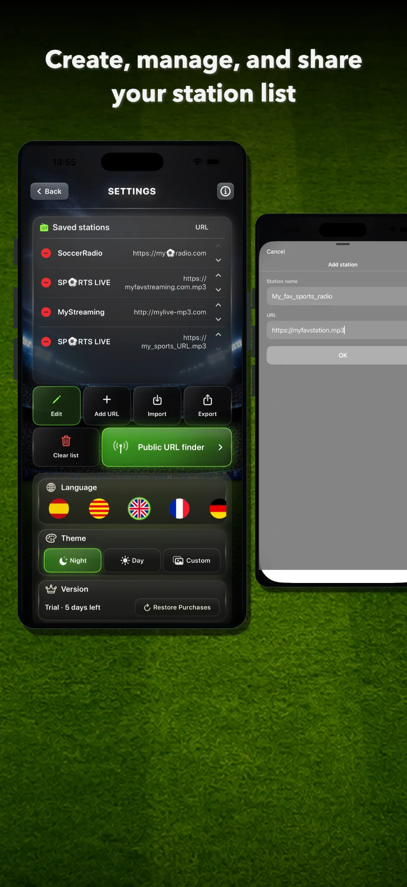
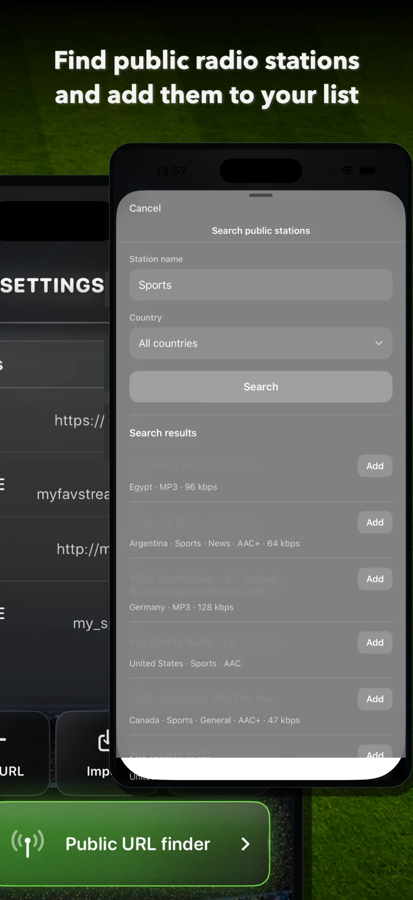
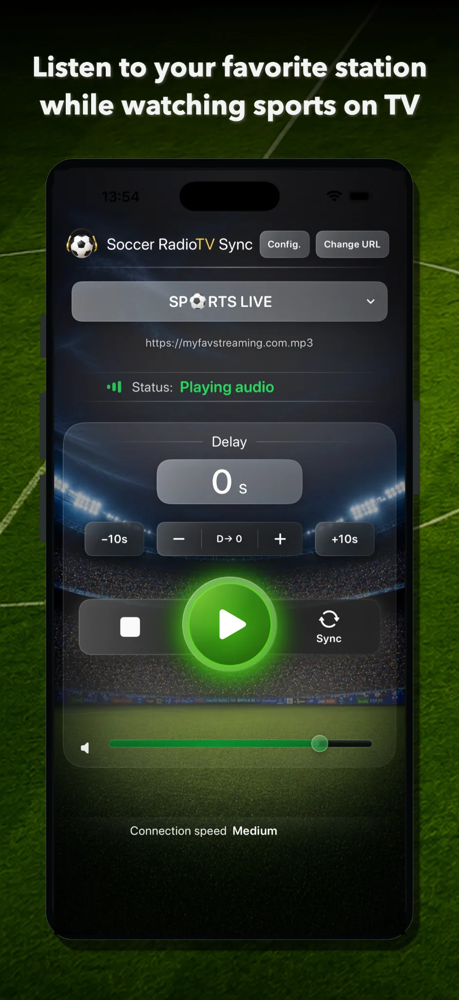
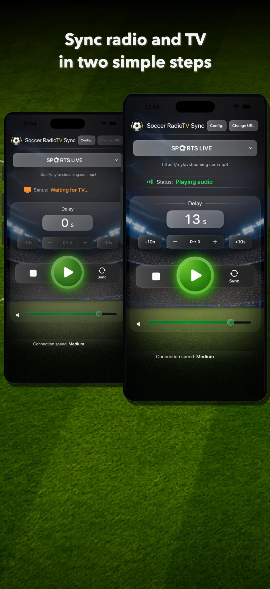
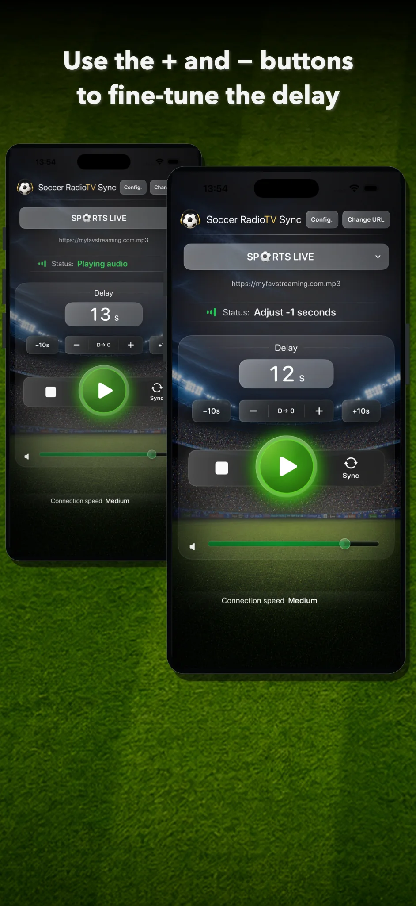
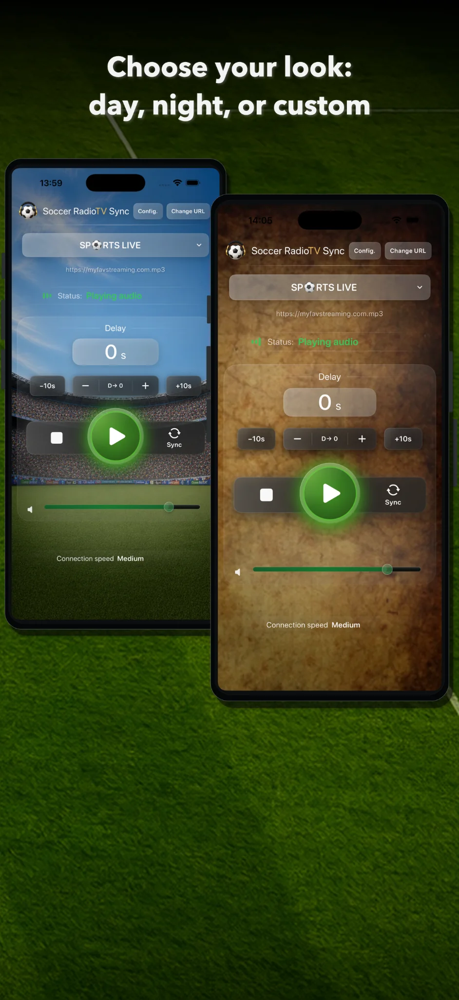

1. Choose or add a station
To start, you need a compatible online radio stream.
- Search public stations from the integrated finder.
- Add a URL manually.
- Import a station list.
From Settings, you can manage saved stations, edit the list, add new URLs, import, export or clear the full list.

2. Use the public station finder
Version 2.0 includes a public station finder based on Radio Browser.
- Open Settings.
- Tap Public URL finder.
- Type the station name, a keyword or the type of content you are looking for.
- Choose a country if you want to limit the results.
- Tap Search.
- Review the results.
- Tap Add to add a compatible station to your list.
After that, you can select it from the main screen.

3. Add a URL manually
If you have a direct URL for a compatible stream, you can add it manually.
- Open Settings.
- Tap Add URL.
- Enter the station name.
- Paste the URL.
- Tap OK.
The station will be saved to your list. This makes it possible to add compatible streams from traditional radio stations, digital radio stations, commentators, creators or services that provide online radio audio.
4. Select the station on the main screen
On the main screen, open the station selector and choose the station you want to hear.
If a station has several URLs or servers, you can switch URL with the Change URL button.
Different servers for the same station can have different latency. If the radio sound arrives after the TV picture, try another URL.

5. Tap Play
Tap Play to start playback.
In version 2.0, playback starts sooner after tapping Play, making the app faster and more direct to use.
When the app is playing, you will see the Playing audio status.
6. Sync in two steps
The Sync button can calculate the required delay automatically.
Step 1
When you hear a recognizable moment on the radio, tap Sync. For example: a shot, a foul, a corner, a clear play or an easy-to-identify comment.
The app will switch to Waiting for TV.
Step 2
When you see that same moment on television, tap Sync again.
The app calculates the elapsed time and applies the corresponding delay to the radio. From that moment, the commentary should match the picture.

7. Adjust the delay manually
After syncing, you can fine-tune the result with manual controls.
- Use + to slightly increase the delay.
- Use – to slightly reduce the delay.
- Use +10s to increase the delay quickly.
- Use –10s to reduce the delay quickly.
- Use D→0 to reset the delay to zero.
These controls are useful if the radio is a little ahead or a little behind during the match.

8. When to use +10s and –10s
The +10s and –10s buttons are for larger changes.
They can be useful when:
- you changed channel;
- you changed server;
- you changed station;
- the TV picture froze for a few seconds and lost synchronization.
If the mismatch is small, + and – will usually be better.
9. Create and manage lists
From Settings you can:
- save stations;
- add URLs;
- edit entries;
- import lists;
- export lists;
- share lists;
- clear the full list;
- change the language;
- change the visual theme;
- restore purchases.
This lets you build your own station list and keep several alternatives for each broadcast.
10. Choose a visual theme
Soccer RadioTv Sync 2.0 lets you choose the look of the app.
Day mode
A brighter screen with a stadium atmosphere.
Night mode
A darker screen designed to reduce visual intensity.
Custom background
Use your own image as the main screen background.
You can change the theme from Settings.

12. Restore purchases
If you already bought Premium, or if you were a paid user of an earlier version, you can use Restore Purchases from Settings.
This recovers Premium access if you reinstall the app or change device using the same Apple ID.
13. Tips for good synchronization
- Choose a radio stream that arrives before the TV picture.
- Use Sync with a clearly recognizable moment.
- If the result is close but not perfect, correct it with + or –.
- If the mismatch is large, use +10s or –10s.
- If one URL does not work well, try another server for the same station.
- If the TV picture freezes for a few seconds, do not stop playback. Re-sync on the fly just like you did at the start of the match.
- Keep several useful URLs for your favorite stations.
14. Important limitations
Soccer RadioTv Sync is designed mainly for streaming TV when the picture arrives later than online radio.
With terrestrial broadcast or satellite, the timing can be different because the picture may arrive before online radio. Soccer RadioTv Sync is mainly designed for cases where the radio needs to be delayed to match a later TV picture.
The app does not control external broadcasts or station servers. Availability, quality and latency can vary for each stream.
If a station changes its URL, stops broadcasting or does not provide a compatible format, you may need to find another URL or use another station.
15. Quick summary
- Add or search for a station.
- Select the station on the main screen.
- Tap Play.
- Tap Sync when you hear a moment on the radio.
- Tap Sync again when you see it on TV.
- Fine-tune with +, –, +10s or –10s.
- Enjoy sport with synchronized radio commentary.